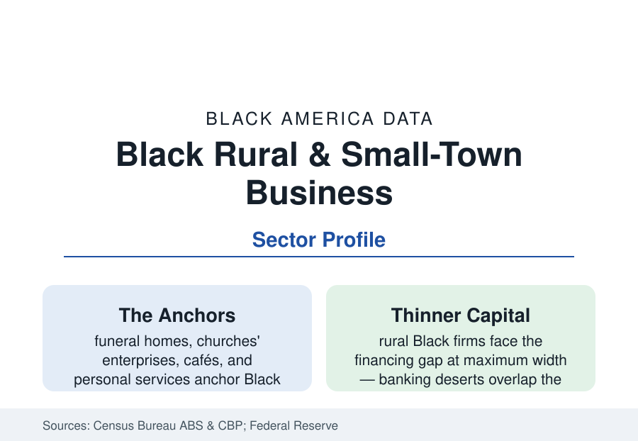

Black Business
Black Business in Rural America and Small Towns: The Main Street File
Rural Black businesses — the funeral homes, cafés, and stores of the Black Belt's small towns — form a business geography of their own. The Census and ABS data.

Most of this section's profiles describe metropolitan business. But a substantial share of Black America's firms operate where a substantial share of Black America still lives: the small towns and rural counties of the Black Belt and the Southern countryside — a business geography of funeral homes and cafés, barbershops and daycare centers, logging crews and catfish ponds, Main Streets a block long that function as their communities' entire commercial infrastructure. This article reports the rural business data.
The Sector Mix of the Small-Town Economy
The Census business data, cut by rural counties, describe a distinctive mix. The anchor institutions are services of necessity: the funeral home (in hundreds of Black Belt towns the largest and most durable Black business — the death-care profession was capital-forming from the burial-association era, and the Black funeral home remains town infrastructure), food service (the café and the plate-lunch spot), personal care (the beauty profile's salons at county scale), childcare (the home daycare as the rural care economy's unit), health services (the clinic and home-health agency riding the Medicaid economy), and the trades (the construction profile's small contractors on public work). Agriculture-adjacent enterprise — the farmers profile's operators, timber and hauling, the catfish and poultry contract economy — and the dollar-store era's retail fringe complete the map. What is absent is as measurable: the rural Black economy has almost no manufacturing ownership, thin professional services, and a retail sector hollowed by the highway chains in the pattern of every rural Main Street, squared by the community's income data.
Capital at Maximum Distance
Every capital variable in the financing profile reaches its extreme in the rural file. The banking-desert research (counties with few or no bank branches — disproportionately the Black Belt in the FDIC and Federal Reserve mappings) measures the physical distance; the MDI and CDFI presence (the banks profile's Southern institutions are substantially rural-rooted, and the CDFI Fund's persistent-poverty-county programs target the crescent) is the counter-infrastructure; the USDA's business programs (Rural Development's loan and grant files) and the SBA's rural operations supply the federal layer, with uptake data stratifying by the application-capacity variables (the accountant, the broadband, the prior banking relationship) that rurality itself thins. The heirs'-property file intersects directly: the rural firm's real estate — the storefront, the land under it — is disproportionately heirs' property with clouded title, un-mortgageable in the standard channels, so the community's core asset cannot collateralize its own businesses' growth.
The Broadband and Market-Access Variables
The rural firm's market is its county unless the internet extends it, and the FCC's coverage data (the rural profile's broadband file) draw the constraint at the same addresses as every other file. The counter-current is measurable: the e-commerce and social-commerce layer (the rural boutique, food, and craft sellers of the platforms' rural-seller data) gives the small-town Black firm a national storefront for the first time in its history — the beauty and food brands that began in Black Belt kitchens shipping nationally are the trade press's favorite rural-business story because the data support it — and the remote-services economy (the rural tax preparer, bookkeeper, and telehealth-adjacent practices) follows the same wire. The agritourism and heritage economy (the civil-rights and blues corridors' visitor spending, the farm-stay and food-trail businesses) monetizes the rural profile's history at the towns' own counters.
Institutions: The Cooperative Tradition
Rural Black business's distinctive institution is the cooperative — the Federation of Southern Cooperatives (founded 1967, the file's central organization for a half-century) and its member co-ops: the farm and marketing cooperatives, the credit unions it incubated, the land-retention and heirs'-property legal programs that defend the asset base itself. The co-op form answers the rural file's arithmetic — subscale producers pooling to market scale, community land and housing cooperatives holding ground no individual balance sheet could — and its data (the Federation's annual reporting on acres retained, families served, co-op revenues) are the rural business section's closest thing to a consolidated statement. The church economy (the rural congregation's enterprises) and the county-seat professional class (the teacher-lawyer-funeral director triad that has staffed Black civic life for a century) complete the institutional map.
Reading the Rural Business Data
Rural Black business is small in the national totals and total in its own geography: in a Black Belt county, the funeral home, the café, the salon, and the co-op are not a sector — they are the economy's Black-owned commanding heights, and their survival is the community's. The data describe firms operating at maximum distance from capital, counsel, and customers, persisting across generations in buildings their founders' heirs still cannot mortgage. That is not a footnote to the business story; by the standards of difficulty, it is the business story's hardest chapter.
More in Black Business
Black-Owned Businesses: Counts, Receipts, and the Representation Gap
About 161,000 Black-owned employer firms and three million solo ventures: how the Census Bureau counts Black business ownership, where firms concentrate, and the gap between population share and business share.
Black Median Net Worth: The Wealth Gap in Federal Reserve Data
The Federal Reserve puts Black median family net worth at $44,900, against $285,000 for White families — about 16 cents on the dollar. The widest gap in economic data.
Black Buying Power: The $1.8 Trillion Consumer Economy
Black buying power is estimated at about $1.8 trillion — larger than the economy of most nations. What the figure measures, who produces it, and what it buys.
Source: U.S. Census Bureau, Annual Business Survey and County Business Patterns; USDA rural business data; Federal Reserve small business research; Federation of Southern Cooperatives.